第 39 期
VLN
视觉语言导航：听一句话 ，在没来过的房子 里自己走到地方
可lip
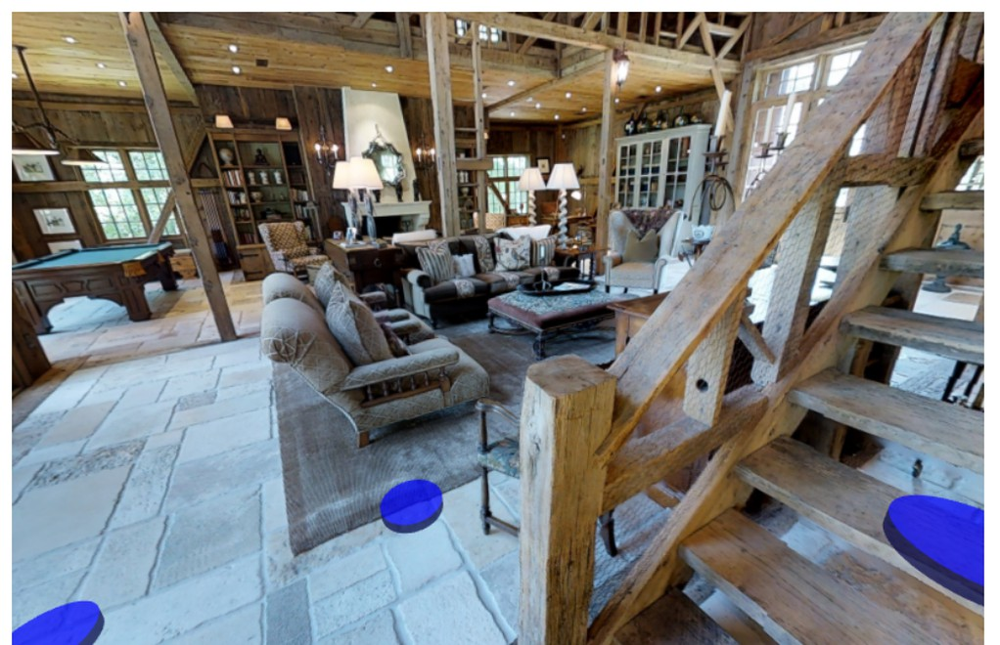
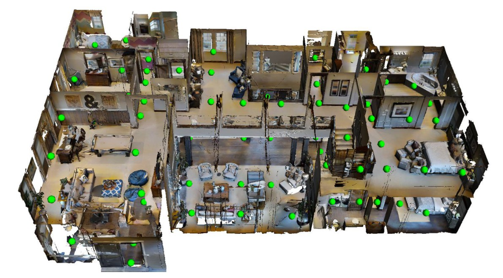
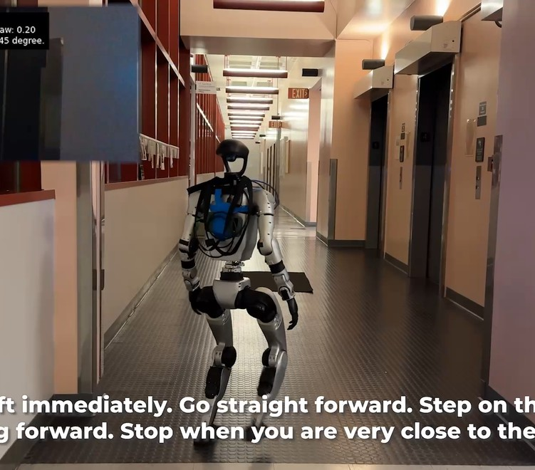
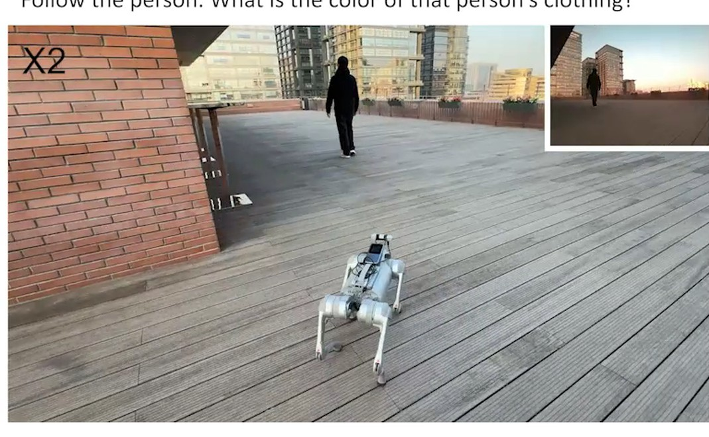
00 全景
八年：两个考场、 三条路线
考场
R2R 导航图上跳点VLN-CE 连续环境里一步步走真机 / 物理仿真
路线一 专门训导航模型
路线二 大模型当大脑
路线三 导航 VLA
Speaker-Follower
预训练
DUET 拓扑图
ScaleVLN 堆数据
LM-Nav
NavGPT
NavGPT-2
frontier agent
NaVid
NaVILA
StreamVLN
DualVLN
大厂
NavGPT-3
2026-10 合流
2018
2019
2020
2021
2022
2023
2024
2025
2026
01 VLN 是什么
同一个范式，动作不一样
VLA操作
输入 相机画面 + 一句任务 + 关节状态
输出 手臂和夹爪怎么动，一秒几十次
VLN导航
输入 一路的画面 + 一句指路的话
输出 往哪走、走多远、停，走一步想一次
01 VLN 是什么
每走一步，就问模型一次
指令 长凳在你左边，沿着走廊往前走，右转进厨房，再左转进卫生间，然后右转进健身房，停在右手边的门前。每次提问都带上同一句 · 原文：With the bench on your left walk forward in the hall and take a right into the kitchen area and take a left into the bathroom and a right into the work out room stopping in front of the door on your right.
第 1 次问
之前看到的
还没有，刚开局
现在看到的
The next action is turn left 45 degree. 左转 45 度
照着做
第 2 次问
之前看到的
现在看到的
The next action is turn left 15 degree. 左转 15 度
照着做
第 3 次问
之前看到的
现在看到的
The next action is move forward 75 cm. 往前走 75 厘米
… 中间又问了
第 20 次问
之前看到的
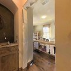
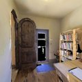
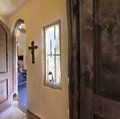
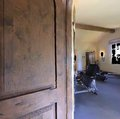
现在看到的
I think I should stop because I have finished the instruction. 我觉得指令完成了，该停了
第 1 次的完整输入：三样东西拼成一段提示词
你是一个导航机器人。
之前 这是你之前看到的视频：（还没有）
现在 这是你现在看到的画面：
指令 你的任务是：长凳在你左边，沿着走廊往前走……停在右手边的门前。
分析这些画面，决定下一步：左转或右转几度、往前走多远，或者完成了就停。
NaVILA 论文里的提示词模板（原文英文）· 每张图变成 196 个 token，和文字一起送进 VILA-8B · 模型只回一句话
所有 VLN 都是这个循环
输入：指令 + 之前看到的 + 现在看到的 → 输出：下一步怎么走，或者停
输入会有些变化：一个摄像头，或者全景 / 好几个相机；老方法还加深度、里程计
变化最大的，是「下一步」长什么样：
2018 · R2R 在旁边几个点里选一个 2020 · VLN-CE 前进 25 厘米 / 左转右转 15 度 / 停 2024 · NaVid、NaVILA 一句话，带距离和角度（刚才这个例子） 2025 · StreamVLN 一次出 4 个动作 2026 · 千问、高德 前方一小段路：8 个 / 5 个路点，每个是 (x, y, 朝向) 2025–26 · DualVLN、Mistral 在画面上点一个像素，小模型画出轨迹
① 拍一张画面
→
② 和指令、之前的画面拼成提示词
→
③ 模型回一句话
→
④ 抠出动作，机器人照着做
↺ 回到 ①
开局：这是机器人第一眼看到的。刚开始，「之前看到的」还是空的
三样东西拼进一段固定的提示词，送进模型
输出只有一句话：左转几度 · 右转几度 · 往前走多少 · 停
程序抠出「左转 45 度」，机器人照着转（仿真里分 3 次，每次 15 度），再拍一张
刚才那张进了「之前看到的」，「现在」换成新拍的，指令不变
每问一次，「之前看到的」就多一张
一共问了 20 次 · 画面太多就均匀抽几帧，第一帧一定留 · 停在终点 3 米内算成功
后面每条路线，就看它改了这个循环的哪一块
01 VLN 是什么
从一句话到电机：中间隔了好几层
例子：NaVILA 开宇树机器狗（论文写得最细）
1
视觉语言大模型
VILA-8B · 想一次要一会儿
「The next action is move forward 75 cm.」
输出就是一句话
2
解析
正则表达式
动作 = 前进 距离 = 75 厘米
把话里的动作和数字抠出来
3
换算成速度
固定速度 × 时间
以 0.5 米/秒往前走 1.5 秒
转弯是每秒 30 度，转 45 度就转 1.5 秒
4
运动策略
强化学习训的小网络 · 实时
12 个关节该转到的角度
输入：速度指令 + 关节状态 + 激光雷达测的地面高低
5
电机
按目标角度出力，腿迈出去
目标角度用刚度、阻尼换算成力矩
通用
换机器人不用动
跟身体绑定
每种机器人一套
边走边对：
关节、IMU、激光雷达
知道自己走了多远
别的模型从哪一层接进来
NaVid · 轮式小车
一句话 → 解析 → 底盘按命令走
边走边看里程计，确认走够、转够
高德 ABot-N0 · 机器狗
直接出 5 个路点 → 控制器
一秒 10 次以上，结合激光雷达避障
→ 速度指令 → 狗自己的运动控制
DualVLN、Mistral
在画面上点像素 → 小模型出轨迹
→ 每台机器人自己的跟踪控制器
大模型 2 / 0.5 Hz，底层 200 / 100 Hz
同一套大模型权重能开不同机器人，
只换最下面几层
01 VLN 是什么
和 VLA 最大的不同：目标不在眼前
1 要边走边找
VLA 要动的东西都在眼前
VLN 终点在别的房间，
2 要有记忆
VLA 大多只看当前这一帧
VLN 记住走过哪，
同一个模型，只换历史怎么喂
写成文字 文字 + 地图 当前画面 + 文字 当视频看
0%
9%
24%
37%
3 要会停
VLA 做没做成，看结果
VLN 自己喊停，
同一个模型，同一批路线
路过过终点
49%
停对了
37%
最强的大模型来导航：
25 次失败，22 次自称到了
4 动作和身体分开
VLA 7 维以上、一秒 50 次，
VLN 只说走多远、转多少，
01 VLN 是什么
模型：从 LSTM 到大模型 + 微调
2018 – 2023
专门训的小模型
LSTM → BERT 式 Transformer
2023
GPT-4 当大脑
不训练，全靠 prompt
2024 –
VLM + 导航数据微调
开源大模型当底座
这两年的底座 · Qwen 系最多
Vicuna-7BNaVid
VILA-8BNaVILA
Qwen2-7BStreamVLN
Qwen2.5-VL-7BDualVLN
Qwen3-VL千问 RobotNav
Qwen3-4B高德 ABot-N0
01 VLN 是什么
导航按目标怎么给，分成三类
给坐标
PointNav
「往前 5 米，往右 3 米」
2019 年基本解决
给一句话
VLN
「踩上草地往前走，
路线 + 地标 + 在哪停
01 VLN 是什么
有什么用：一句话，让它替你走过去
找东西 办公室 · 仓库 （拍张可乐罐）「我想再来点这个」
跑腿 商场 · 园区 「去 Cotti 咖啡看看我的伞还在不在」
无人机 巡检 · 搜救 「朝红屋顶的楼飞，看到整座桥就停」
02 R2R
第一个 VLN 考场：R2R
CVPR 2018 · 澳大利亚国立大学 · Room-to-Room
02 R2R
点连成图，每一步跳到相邻的点
平均每栋 117 个点 · 点之间约 2.25 米 · 超过 5 米的边不连
02 R2R
同一条路，三个人写了三种说法
指令 1
走出衣帽间，右转出房间。左转朝客厅走，停在天井门旁边、沙发前的地毯边上。
Walk out of the closet and take a right out of the room. Take a left and walk towards the living room. Stop nest to the rug in front of the couch next to the patio door.
指令 2
走出衣帽间，往右出卧室。往左经过厨房，进到客厅，停在灰色地毯左边一点。
Exit the closet and walk to your right out of the bedroom. Walk to your left past the kitchen and into the living area. Wait in the living room just to the left of the grey area rug.
指令 3
转身走出衣帽间，右转出卧室。左转一直往前走，停在沙发前面。
Turn around and walk out of the closet and take a right and walk out of the bedroom. Take a left and walk strauight. Wait in front of the couch.
02 R2R
众包写了 2 万多条 指令
7,189 条路线 · 每条 3 个人各写一条 · 平均 29 个词、10 米 · 400 多人写了约 1,600 小时
02 R2R
按楼分，考的是没进过的房子
61 栋
训练
14,025 条指令
另抽 1,020 条做「见过的验证」
11 栋
验证 · 没见过
2,349 条指令
18 栋
测试 · 没见过
4,173 条指令
终点不公开，交到服务器打分
这 29 栋，训练时一张图都没见过
02 R2R
停在终点 3 米内，才算成功
3 米
B
C
A
终点
起点
SR
成功率：自己喊停，离终点 ≤ 3 米
A ✓ B ✓ C ✗
OSR
路上经过过终点就算
C 也算 → 和 SR 一比，就知道会不会停
SPL
成功了，再按路程打折
A 接近满分，B 绕了远路分数低
NE
停的位置离终点差几米
越小越好
02 R2R
第一个模型：把导航当成翻译
LSTM 读完指令 → 每一步看一张图，吐一个动作：左转 · 右转 · 抬头 · 低头 · 前进 · 停
02 R2R
换到没见过的楼，只剩两成
25%
50%
75%
100%
13.2%
随机乱走
测试集
38.6%
见过的楼
验证 · 见过
21.8%
没见过的楼
验证 · 没见过
20.4%
测试
没见过的楼
86.4%
人类
测试集 1/3
02 R2R
后来的考场：换语言、换目标、换场地
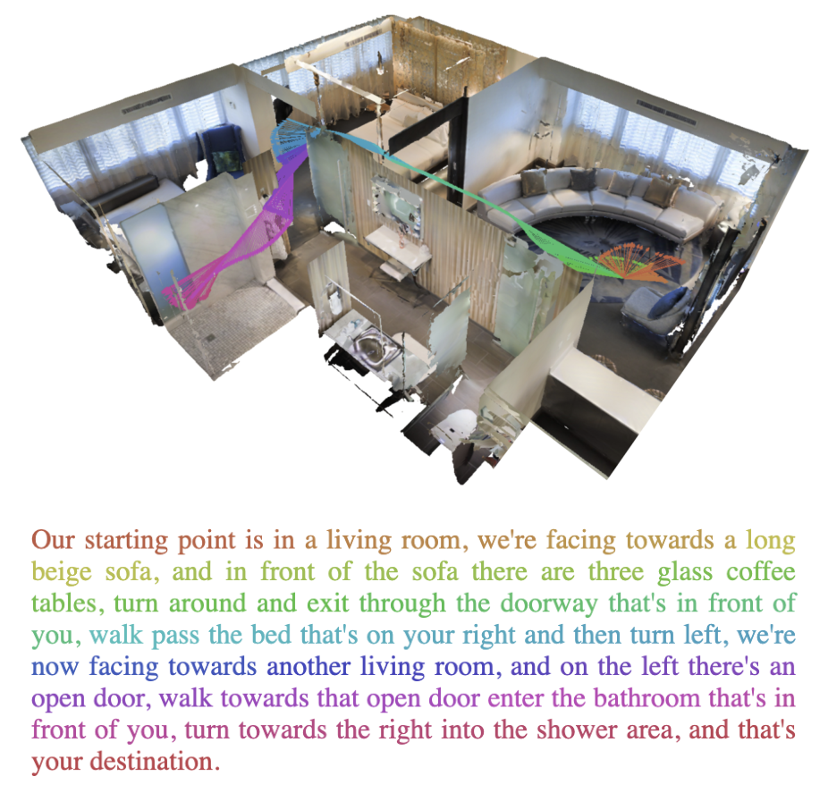
RxR · 2020 · 三种语言、路更长
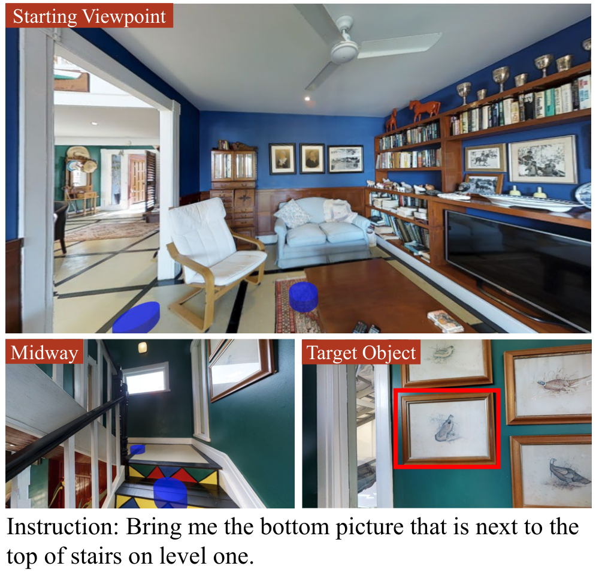
REVERIE · 2020 · 只说找什么
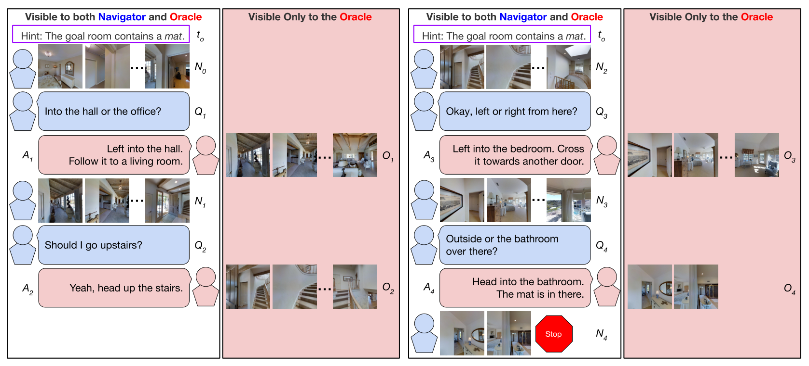
CVDN · 2019 · 走一半可以问路
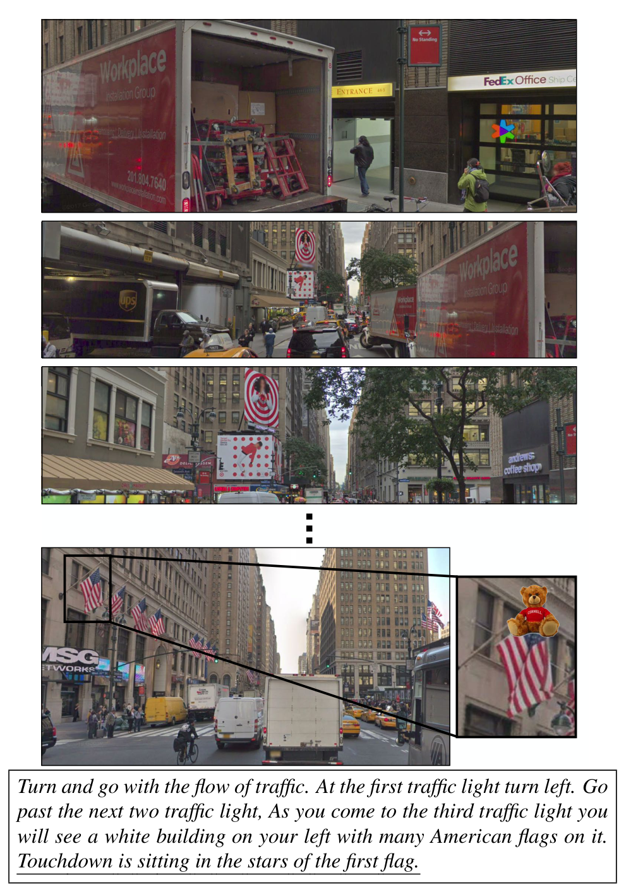
Touchdown · 2019 · 纽约街景
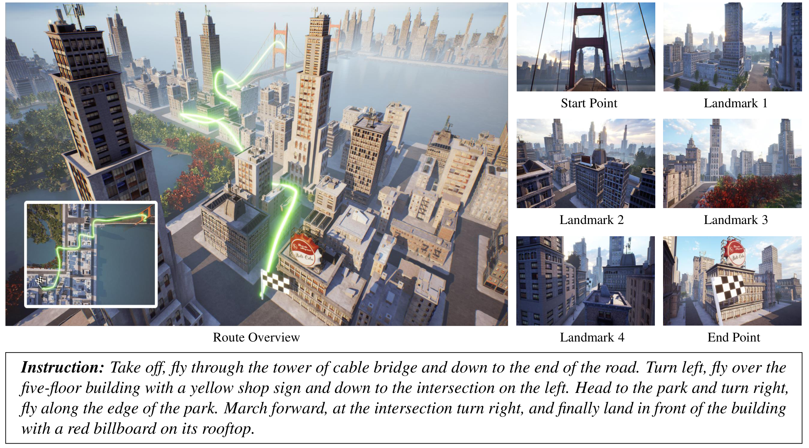
AerialVLN · 2023 · 无人机
03 路线一
Speaker-Follower：反过来训一个模型，自己造数据
NeurIPS 2018 · UC Berkeley 等 · 人写的 1.4 万条 + 机器写的 17.8 万条
03 路线一
后来五年：从两成爬到八成
颜色是训练数据量：1.4 万 → 17.8 万 → 100 万 → 490 万
04 换考场
换考场：去掉导航图，一步 25 厘米
VLN-CE · ECCV 2020 · 一条路从 4–6 步变成平均 56 步
05 路线二
NavGPT：画面先写成文字，GPT-4 边想边走
AAAI 2024 · 阿德莱德大学 · 一条导航数据都不训
问 输入 · 每一步发给 GPT-4 的
↓ 视觉模型把 8 个方向各写成一句话，标上物体、距离、能走的点
指令 走出缝纫间，右转，朝放着娃娃的玻璃柜走……在洗手池边等。
前方 一间洗衣房，有洗衣机和烘干机。能走的点：右 6°，1.7 米
右边 木地板的房间，有个摆满小雕像的玻璃柜。能走的点：右 92°，2.4 米
……一共 8 个方向，再加上之前走过的摘要。原文是英文
答 输出 · GPT-4 回的
I have exited the sewing room. Now, I need to turn right and go toward the glass cabinet with the dolls in it. I see a room with a glass cabinet filled with figurines to my right. I will move to the navigable viewpoint in that direction.
想法 出了缝纫间，该右转去玻璃柜了；右边正好看到，往那走
选右边那个点点的编号 da3ab1ba… · 只能在旁边几个点里选，或者停
对比 NaVILA： 直接看画面，回的是「前进 75 厘米」
没见过的楼
GPT-4 不训练34%
专门训的 DUET72%
差在哪：看不清 （画面变文字丢信息）· 记不住 （历史压成一段摘要）
06 路线三
NaVid：第一个让 VLM 看视频来导航
RSS 2024 · 北京大学王鹤组 + 银河通用 · 只给一个摄像头的视频，直接说下一步怎么走
06 路线三
架构：一帧画面变成几个 token，交给 Vicuna-7B
① 一帧画面怎么变成 token（下面雪花框的放大）· ② 历史帧 + 当前帧 · ③ 指令 · ④ 大模型出动作
06 路线三
当前帧看清楚，之前的帧只记个大概
当前这一帧
64 个画面 token + 1 个按指令挑的
之前的每一帧
…
每帧只给 4 个 + 1 个
视觉编码器本来每帧出 256 个，先压缩再交给大模型
走到第 60 帧：
65 + 59 × 5 = 360 个 token
不压的话：60 × 256 = 15,360 个
之前每帧给几个 token（表 VIII）
23.9%
1 个
一步 0.87 秒
37.4%
4 个
一步 1.22 秒
38.0%
16 个
一步 2.72 秒
06 路线三
数据：51 万条导航样本 + 76 万条网上视频
32万
专家走的路，按步切开 R2R 训练集 61 栋房子 · 历史 + 当前画面 → 正确的下一步
18万
DAgger：让它自己走，走偏了再纠正 先用 32 万条训一版，放进仿真里自己走，每一步标上正确动作
1万
指令推理：看一段路，写出指令 反过来的任务，和 Speaker-Follower 的 speaker 一个思路
76万
网上的视频问答 LLaMA-VID 原来的训练数据 · 防止训完变笨
06 路线三
训练：少一种数据就掉分 ，到 33 万条才开窍
24 张 A100 · 28 小时 · 只训 1 个 epoch
少一种数据会怎样（R2R-CE 成功率，表 VII）
三种都有
37.4%
不用 DAgger 数据
34.2%
不加指令推理样本
31.1%
不混网上视频数据
24.7%
导航数据越多 → 成功率（图 8）
10%
20%
30%
40%
DAgger 前
DAgger 后
0
5
14.4
33.1
35.8
37.4
4 万
14 万
28 万
33 万
51 万
导航样本数
06 路线三
推理：说一句话，抠出动作 ，再看下一眼
1
大模型说一句话 The next action is move forward 75 cm.
2
用正则表达式抠出动作和数 动作 = 前进，距离 = 75 厘米 · 在验证集上 100% 抠得出来
3
交给仿真器或者机器人执行 真机上模型跑在远程服务器，一步 1.2–1.5 秒
06 路线三
只用一个摄像头：37.4% ，同条件的老方法 5%
R2R-CE 没见过的楼 · 成功率
5%
老方法
只用摄像头
5%
GPT-4V
不训练
37.4%
NaVid
只用摄像头
38.9%
地图方法
深度 + 里程计
57%
ETPNav
全景 + 深度 + 里程计
只用一个摄像头
要更多传感器
（随机抽的 100 条）
只在 R2R 上训，直接去考 RxR
只用摄像头的老方法
0%
地图方法（深度 + 里程计）
15%
A2Nav：GPT 当大脑，不训练
16.8%
NaVid
23.8%
06 路线三
两个关键选择：历史当视频看，动作用一句话说
之前走过的路，怎么喂给模型（表 IV）
写成文字
0%
文字 + 俯视地图
9.1%
当前画面 + 文字
23.5%
直接当视频看
37.4%
动作怎么输出（表 VII）
说一句话：「往前走 75 厘米」
37.4%
直接输出坐标和朝向
0%
都是 R2R-CE 成功率，只改这一处，其他不变
06 路线三
真机：简单指令 85% ，复杂指令 47%
TurtleBot4 + 一个普通摄像头 · 会议室、办公室、实验室、休息区 · 200 条指令
四个场景各 50 条 · 停在 1.5 米内算成功
85%
47%
NaVid
只用摄像头
51%
22%
地图方法
深度 + 里程计 + 地图
2%
0%
老方法
Seq2Seq / CMA
简单指令
复杂指令
06 路线三
NaVid 之后，这一年在改这四件事
NaVid 的问题
后来谁接着改
慢：一步要 1.2–1.5 秒
作者自己写的局限
StreamVLN
KV cache 复用，0.27 秒出 4 个动作
路一长，视频太长塞不下
作者自己写的局限
StreamVLN
近的全记，远的压缩
动作一格一格，走起来一卡一卡
后来的论文指出的
DualVLN
大模型点目标，小模型画连续轨迹
一个模型只会跟指令走
后来的论文指出的
Uni-NaVid → 千问、高德
一个模型做多件事、开多种机器人
06 路线三
Uni-NaVid：一个模型做四件事
RSS 2025 · 跟指令走 · 找物体 · 回答问题 · 跟着人走 · 360 万条数据
06 路线三
Uni-NaVid 比 NaVid：底座没换，数据涨到 7 倍
NaVid · 2024-02 Uni-NaVid · 2024-12 预训练底座 EVA-CLIP 看图 + BERT 读指令 + Vicuna-7B EVA-CLIP 看图 + Vicuna-7B，去掉 BERT 那一路 每帧几个 token 当前帧 64 · 之前每帧 4 + 1 当前帧 64 · 最近 64 帧每帧 4 · 更早每帧 1，像的合并 一次输出 1 个动作，带距离角度（前进 75 厘米） 4 个动作（前进 25 厘米 / 转 30 度 / 停） 速度 一步 1.2–1.5 秒 0.2 秒出 4 个，约 5 Hz 会的任务 跟指令走 跟指令 · 找物体 · 边走边答题 · 跟着人走 训练数据 51 万导航 + 76 万视频问答 360 万导航 + 230 万视频问答 怎么训 24 张 A100 · 28 小时 · 1 轮 先训连接层，再一起训 Vicuna · 40 张 H800 · 35 小时 · 1 轮 R2R-CE 成功率 37.4% 47.0%
06 路线三
StreamVLN：近的全记，远的压缩
① 多轮对话 · ② 每轮回 4 个动作，KV cache 接着用 · ③ 最近 8 轮完整留 · ④ 更早的：抽帧 + 去重
06 路线三
DualVLN：大模型点目标，小模型画轨迹
2025 · 上海人工智能实验室 · InternVLA-N1 的双系统版 · 慢 2 Hz，快 30 Hz
06 路线三
人形、四足、轮式都能跑，还全开源
R2R-CE 64.3% · 加了物理的仿真里 51.6%（NaVid 22.4%）· 代码、权重、83 万条数据都放出来了
06 路线三
千问：怎么看历史，交给上层大模型来调
① 输入 · ② 按权重分 token · ③ 标出第几步、哪个相机 · ④ Qwen3-VL · ⑤ 出 8 个路点 · ⑥ 上层大模型
06 路线三
千问：机器狗在没去过的展厅里走 21.78 米
R2R-CE 72.1%、RxR-CE 76.5%（全景）· 1,560 万条样本 · 一步约 0.2 秒 · 权重不开源 · 2 倍速
06 路线三
高德 ABot-N0：五个任务一个模型，接上高德地图
2026-02 · 大脑 Qwen3-4B + flow matching 动作专家 · 1,690 万条轨迹 · R2R-CE 66.4%
06 路线三
ABot-N0：1,690 万条轨迹，三步训练
大脑 Qwen3-4B · 后面接 flow matching 动作专家，出 5 个路点 · 文字目标直接读，坐标目标用 MLP 变成 token
1,690 万条轨迹 + 500 万条推理样本
坐标 400 万 · 指令 280 万 · 找物体 360 万 · 找店门 250 万 · 跟人 400 万
来源：7,802 个 3D 场景 · 网上第一视角视频 200 万 · 真机遥控 34 万 · 视频生成 250 万
训练分三步
1 只用推理数据训大脑，动作专家冻住2 五个任务的轨迹一起训，混 20% 推理数据3 冻住大脑，强化学习只训动作专家：走草坪、上车道、撞人都扣分
上机
宇树 Go2 X · 三个相机 + 激光雷达 + RTK · 狗身上的 Orin NX 一秒想 2 次，成绩只掉 3%
06 路线三
ABot-N1：整套跑在机器狗上，带人过马路
2026-07 · R2R-CE 70.9% · 自建考场：室外按坐标走 92.9%、室内零碰撞 95.4%、找店门 77.3%
06 路线三
Mistral：在画面上指一个点，小模型画出轨迹
2026-07 · Robostral Navigate · 8B，自家模型不用开源底座 · 只用一个普通摄像头 · 全在仿真里训
06 路线三
Mistral：只用一个摄像头，R2R-CE 77.4%
星海图 R1 和一台小车用同一套权重 · 35 万个仿真场景、240 万条轨迹 · 论文和博客都没提开源
R2R-CE 没见过的楼 · 成功率
66.9%
千问 4B
单目，之前最好
72.1%
千问 8B
全景，之前最好
73.4%
Mistral
只做监督训练
77.4%
Mistral
+ 在线强化学习
Mistral 只用一个摄像头；千问 8B 用的是全景画面
06 路线三
两个新方向：强化学习和世界模型
强化学习 先模仿专家，再按打分接着练
21.2
25.6
VLN-R1 · 2B
2025-06
24.9
30.2
VLN-R1 · 7B
2025-06
73.4
77.4
Mistral · 8B
2026-07
只模仿专家
+ 强化学习
R2R-CE 没见过的楼 · 成功率 %
世界模型 高德 AstraNav-World：先想象接下来五步会看到什么，再出路点
06 路线三
只用一个摄像头，两年半从 37% 到 77%
R2R-CE 没见过的楼 · 成功率 · 横轴是论文第一次挂出来的月份
40%
50%
60%
70%
80%
2024
2025
2026
ETPNav 57%（2023 · 全景 + 深度 + 里程计）
OmniNav 69.5
高德 N0 66.4
千问 8B 72.1
高德 N1 70.9
NaVid 37.4
NaVILA 54.0
StreamVLN 56.9
DualVLN 64.3
千问 4B 66.9
Mistral 77.4
NavGPT-3 81.5
大模型 + VLA
只用一个摄像头
全景 / 多相机
大模型 + 导航 VLA
07 合流
NavGPT-3：大模型当调度员，导航 VLA 当司机
2026-10 · 阿德莱德大学等 · 一作就是 NavGPT 的一作 · R2R-CE 81.5% · RxR-CE 90.43%，人类 90.4%
07 合流
八年：两个考场、三条路线， 最后合到一起
考场
R2R 导航图上跳点VLN-CE 连续环境里一步步走真机 / 物理仿真
路线一 专门训导航模型
路线二 大模型当大脑
路线三 导航 VLA
Speaker-Follower
预训练
DUET 拓扑图
ScaleVLN 堆数据
LM-Nav
NavGPT
NavGPT-2
frontier agent
NaVid
NaVILA
StreamVLN
DualVLN
大厂
NavGPT-3
2026-10 合流
2018
2019
2020
2021
2022
2023
2024
2025
2026